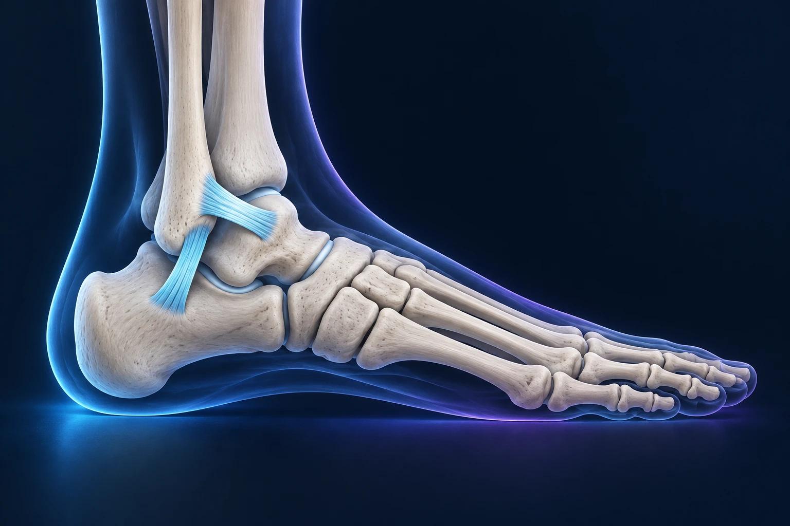

Cheville douloureuse plusieurs mois après une entorse : que faire ?
Publié le

L’accident est ancien, mais la cheville continue de gêner à la marche ou lors des changements de direction. L’objectif n’est plus seulement de savoir quand reprendre le sport : il faut comprendre ce qui limite encore la récupération. Une douleur persistante mérite d’être réévaluée.
Douleur, raideur et instabilité : distinguer les sensations
« Ma cheville n’est pas solide » peut désigner plusieurs difficultés. S’agit-il d’une douleur à chaque pas, d’un manque de mobilité ou d’un véritable dérobement ? Préciser la sensation aide à construire le bilan. Une entorse peut laisser une instabilité ; des lésions associées des tendons ou du cartilage peuvent aussi être recherchées selon l’examen. AAOS : évolution et bilan d’une entorse.
Que raconter pendant la consultation ?
Reconstituez brièvement l’accident initial, les soins reçus et les étapes de récupération. Expliquez ce qui est redevenu possible et ce qui reste difficile. Par exemple : marcher sur le plat, descendre une pente, rester debout au travail ou changer de direction.
Apportez les examens déjà réalisés et précisez le contenu de la rééducation. Dire « j’ai fait dix séances » renseigne moins que décrire les exercices travaillés, les progrès obtenus et les gestes qui restent douloureux. Signalez les nouveaux épisodes de torsion survenus depuis l’accident.
Quels examens sont utiles ?
Le professionnel examine la mobilité, les zones sensibles et la stabilité. Des radiographies peuvent rechercher une atteinte osseuse. Une IRM peut être proposée devant des symptômes persistants ou pour étudier des structures associées ; elle n’est pas systématique pour toute entorse. La prescription répond à une question précise, qui mérite d’être expliquée.
Faut-il envisager une opération ?
La persistance d’une douleur ne signifie pas automatiquement qu’il faut opérer. La rééducation et le traitement non chirurgical gardent une place importante. Une chirurgie peut être discutée dans certaines situations où les symptômes persistent malgré une prise en charge adaptée, notamment en cas d’instabilité. Le geste proposé doit correspondre au problème identifié.
Avant toute décision, demandez : « Quel est l’objectif du traitement ? Quelle gêne peut-il améliorer ? Quelles sont ses limites ? » Fixez aussi un point de réévaluation. Cela évite de poursuivre sans repère un programme qui ne vous aide plus.
Quand consulter sans attendre ?
Une nouvelle blessure importante, une impossibilité de prendre appui ou une aggravation nette justifie une évaluation rapide. Il ne faut pas attribuer systématiquement tout nouveau symptôme à l’ancienne entorse. En attendant le bilan, ne cherchez pas à tester la stabilité par des sauts ou des changements de direction forcés.
Ces informations générales ne remplacent pas un avis médical personnalisé.